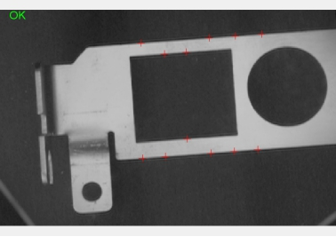
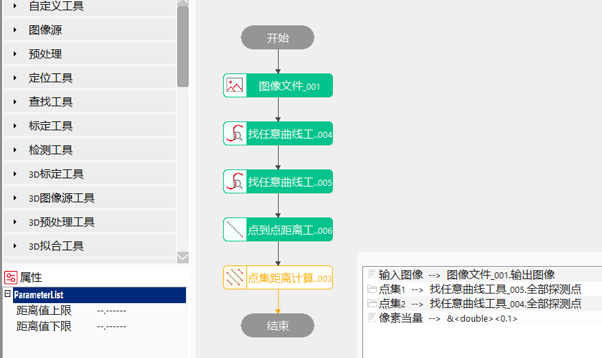
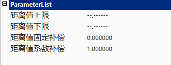
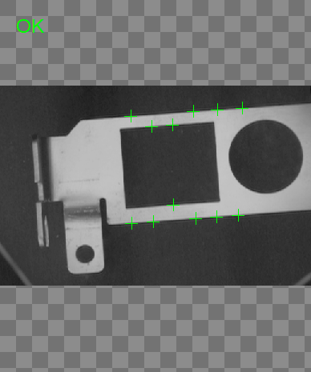
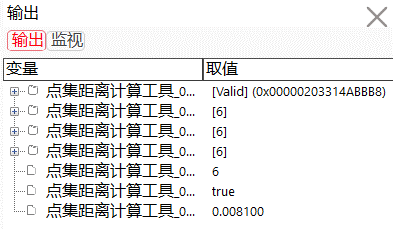

点集距离计算工具的主要作用是计算图像上两个点集对应点之间的直线距离，并可以将图像上的距离换算成实际的距离。

常用于检测多个点位到边缘线的距离是否符合规格或要求。
距离计算方法
点集A和点集B中对应两点的欧式距离，即


距离值上限、距离值下限
对于输出参数距离值集合的所有距离值的有效范围进行限定，上下限可取值范围为[0, 999999.999999]，另可设置为"–.——“,表示对距离值上限或下限不进行限定。
使用距离值上限或/和距离值下限对距离值集合中的所有距离值的有效范围进行设定后，执行此测量工具。
当输出结果距离值集合](#距离值集合)中的所有距离值在设定的有效范围内时，显示工具执行结果成功；否则，任意距离值不在限定的范围内时，显示工具执行结果失败。


| 现象描述 |
|---|
| 两个点集的点数应相同，否则工具执行失败。 |
| 参数名称 | 参数说明 |
|---|---|
| 输入图像 | 待测量多点到直线距离的图像。 |
| 点集1 | 输出点集1中每个点的坐标值。 |
| 点集2 | 输出点集2中每个点的坐标值。 |
| 像素当量 | 每个像素代表的实际物理尺寸，单位mm。 |
| 距离值上限 | 取值范围[0,999999.999999]，输出参数距离值集合的上限阈值。 |
| 距离值下限 | 取值范围[0,999999.999999]，输出参数距离值集合的下限阈值。 |
| 距离值固定补偿 | 测量结果固定补偿。一般为0，用于补偿成效等系统误差。 |
| 距离值系数补偿 | 测量结果系数补偿。一般为1，用于补偿成像等系统误差。 |
| 高级界面 | 无 |
| 参数名称 | 参数说明 |
|---|---|
| 输入图像 | 输出图像宽度、高度、像素大小。 |
| 点集1 | 输出点集1中每个点的坐标值。 |
| 点集2 | 输出点集2中每个点的坐标值。 |
| 距离集合 | 两个点集中对应点（下标相同）的实际距离值，毫米为单位。 |
| 点集长度 | 点集中所包含的点的总数。 |
| 执行结果 | 工具执行结果，执行成功显示“OK”，执行失败显示“NG”，同监视窗口的执行结果参数。 |
| 执行时间 | 工具执行时间。 |
参见“\Samples\点集距离计算工具.gvp”。